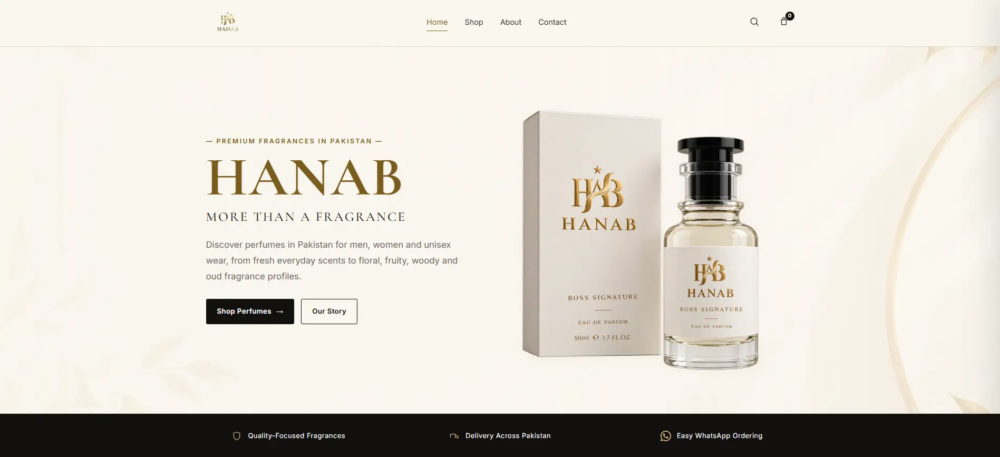
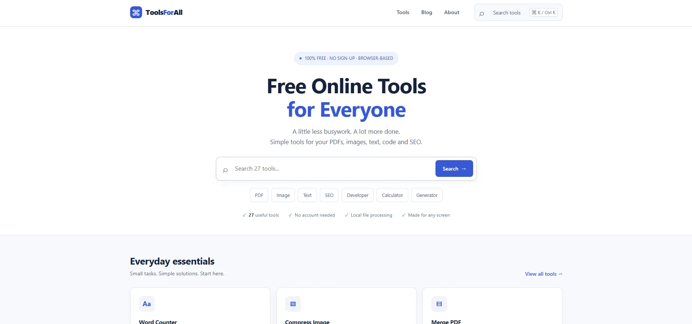
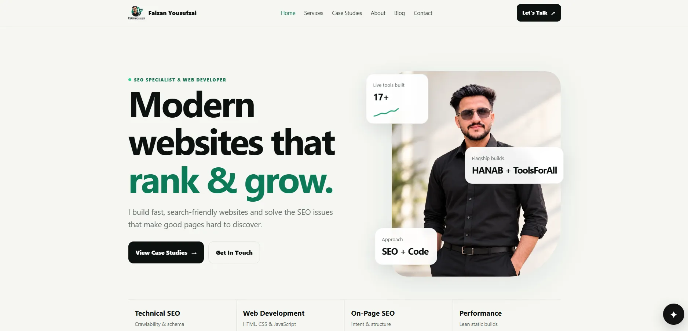

HANAB perfume store
A searchable e-commerce experience with category architecture, product pages, WhatsApp ordering, and SEO-focused copy.

I help businesses improve crawlability, content structure, search visibility and website performance with practical SEO services.
Technical SEO, on-page optimization, authority building and responsive web development.
Work with me ↗I work as an SEO specialist and web developer, which means I can investigate search problems and also work on the website changes behind them. My SEO services cover technical SEO, on-page SEO, off-page SEO, SEO audits and content strategy, plus SEO-friendly web development.
If you are looking for an SEO expert to improve crawlability, rankings, internal linking, Core Web Vitals, schema or content structure, start with my case studies or send me your website.
I prefer verifiable proof to made-up traffic numbers. These projects show the structure, front-end work, content decisions, and search foundations I build.
A searchable e-commerce experience with category architecture, product pages, WhatsApp ordering, and SEO-focused copy.

SEO and development work better when the technical structure, content, and front end support the same goal.
Crawl diagnostics, indexing, schema, sitemaps, canonicals, Core Web Vitals and technical cleanup.
Explore service →Keyword mapping, titles, headings, internal links, content structure, entities and search intent alignment.
Explore service →Competitor backlink research, prospect qualification, guest posting and safer authority-building workflows.
Explore service →Responsive HTML, CSS, JavaScript and WordPress websites with SEO foundations built in from day one.
Explore service →Useful content briefs, landing page structure, content refreshes, FAQs and internal linking plans.
Explore service →Prioritized findings that explain what matters, why it matters, and what should be fixed first.
Explore service →These articles explain the same areas I work on as an SEO specialist: technical SEO, schema, Core Web Vitals, content for AI search, website migration and relevant backlink strategy.
A practical checklist for crawling, indexing, canonicals, sitemaps, schema and other technical SEO foundations.
Read technical SEO checklist →Learn how structured data supports clearer search understanding for service websites and personal brands.
Read schema markup guide →Understand LCP, INP and CLS and the development changes that can improve real page experience.
Read Core Web Vitals guide →Structure useful pages for traditional search, AI Overviews and answer engines without writing for algorithms alone.
Read AI search content guide →Protect URLs, internal links, metadata and crawl signals when a website is redesigned or moved.
Read migration guide →A safer approach to backlink research that prioritizes topical fit and real value instead of chasing metrics alone.
Read backlink strategy →Use my free browser-based tools alongside the SEO guides, or browse the complete tools directory for utilities related to SEO, content, images, PDFs and development.
Perfume store for Pakistan with category-led navigation, product pages, price and size information, and WhatsApp ordering.
Read case study →
Browser-based tools covering SEO, images, PDFs, writing and everyday web tasks.
Read case study →
Portfolio, knowledge hub and free tools collection built around clean static delivery and search-friendly architecture.
Read case study →
I like understanding why a website is underperforming, then fixing the structure instead of only writing a report about it.
Built the foundation through documentation, tutorials, experiments, and practice websites.
Moved into hands-on backlinking while expanding into technical SEO, content and front-end development.
Building public web products and combining search structure with fast, useful front ends.
No ranking guarantees and no invented results. The focus is on useful work that can be checked in the site, the code, or search data.
Understand the query, the site, competitors and technical state before changing things.
Semantic markup, crawlable navigation, clean URLs and performance considered during the build.
Simple code and practical documentation instead of complexity for its own sake.
Use Search Console, analytics and real site behavior to decide what to improve next.
A quick overview of how I approach SEO consulting, technical fixes, content optimization and website performance.
I work across technical SEO, on-page SEO, off-page SEO, SEO audits, content structure, internal linking, schema markup and search-friendly web development.
Yes. Technical SEO and development overlap in areas such as Core Web Vitals, crawlability, page structure, JavaScript, indexability and internal linking. See my Core Web Vitals guide for a practical example.
Yes. An SEO audit can cover technical issues, indexing, metadata, content structure, internal links, schema and prioritized fixes. You can review the full SEO services or contact me with your website.
No. Search rankings depend on many factors. I focus on work that can be checked: technical quality, relevance, usability, content, authority signals and measurable search performance.
Send the website, the problem, and the goal. I’ll help turn it into a practical scope.